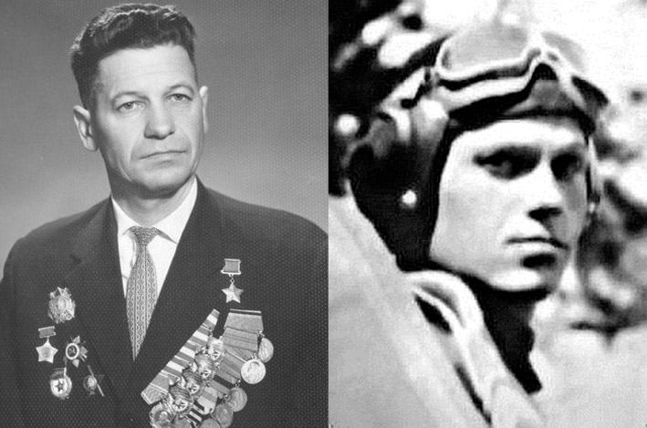

Василевский Егор Васильевич — командир эскадрильи 151-го гвардейского истребительного Венского Краснознаменного ордена Богдана Хмельницкого 3-й степени авиационного полка (13-я гвардейская истребительная Полтавско-Александрийская Краснознаменная ордена Кутузова 2-й степени авиационная дивизия, 5-я воздушная армия, 2-й Украинский фронт), гвардии капитан.
Родился 1 января 1922 года в селе Горбачёво ныне Витебского района Витебской области в семье крестьянина. Белорус. Окончив 7 классов, работал в колхозе.
В 1939 году призван в Красную армию и по комсомольской путёвке направлен в авиационное училище. В 1940 году успешно окончил Одесскую военно-авиационную школу. В 1940-1942 годах проходил службу лётчиком-инструктором в Сталинградской военной авиационной школе.
На фронтах Великой Отечественной войны с мая 1943 года. В составе 427-го (с июля 1944 года — 151-го гвардейского) истребительного авиационного полка участвовал в воздушных боях при освобождении Белгорода и Харькова. С первых вылетов зарекомендовал себя умелым лётчиком-истребителем. Дисциплинированный, аккуратный, склонный к анализу, он, по свидетельству командира полка А.Д.Якименко, как никто другой, мог точно выполнить боевое задание. Презиравший ухарство и рисовку, был последователен и расчетлив в воздушных поединках.
В начале августа 1943 года из лучших лётчиков полка была создана специальная группа из 12 истребителей под кодовым названием "Меч". Группа независимо от метода прикрытия наземных войск имела постоянное дежурство на своём аэродроме для вылета по первому сигналу в зону воздушного боя с целью наращивания ударной мощи и истребления, так же летчики вели "свободную охоту". В эту ударную группы был включен и Е.В.Василевский.
В составе полка участвовал в освобождении Украины, в Корсунь-Шевченковской и Ясско-Кишиневской операциях, в боях над Румынией, Венгрией.
К ноябрю 1944 года гвардии капитан Е.В. Василевский совершил 217 боевых вылетов, провел 54 воздушных боя, лично сбил 17 самолетов противника и 2 в группе и был представлен к высокому званию Героя Советского Союза.
Летчик-истребитель Е.В. Василевский с боями дошел до Австрии. Последний самолет, четырехмоторный FW-200, вместе с напарником сбил над Веной. Всего за войну провел более 250 боевых вылетов, провёл 60 воздушных боёв, лично сбил 24 и в группе 3 самолёта противника. Все вылеты совершил на истребителях конструкции Яковлева - Як-1, Як- 9 и Як-3.
Указом Президиума Верховного Совета СССР от 15 мая 1946 года за отвагу и геройство, проявленные в боях с немецкими
захватчиками в Великой Отечественной войне гвардии капитану Василевскому Егору Васильевичу присвоено звание Героя Советского Союза с вручением ордена Ленина и медали «Золотая Звезда».
После войны продолжал службу в ВВС. В 1955 году окончил Военно-воздушную академию.
С 1958 года полковник Е.В.Василевский — в запасе. Жил и работал в городе Витебск.
Умер 1 мая 1991 года. Похоронен на Мазуринском кладбище в Витебске.
Награждён орденом Ленина, 4 орденами Красного Знамени, орденом Александра Невского, 2 орденами Отечественной войны 1-й степени, орденом Красной Звезды, медалями.